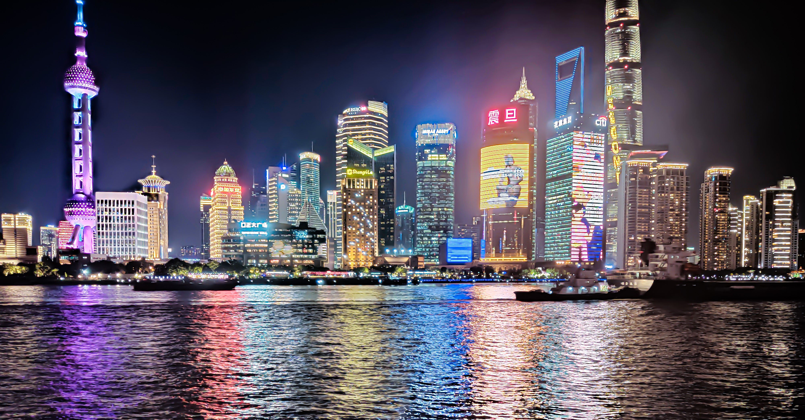
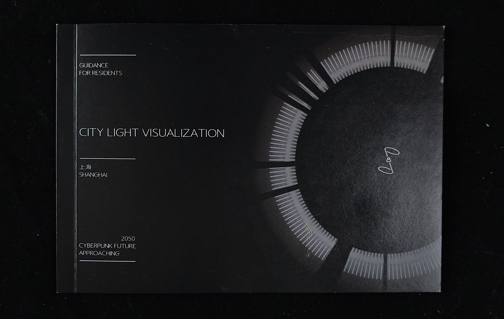
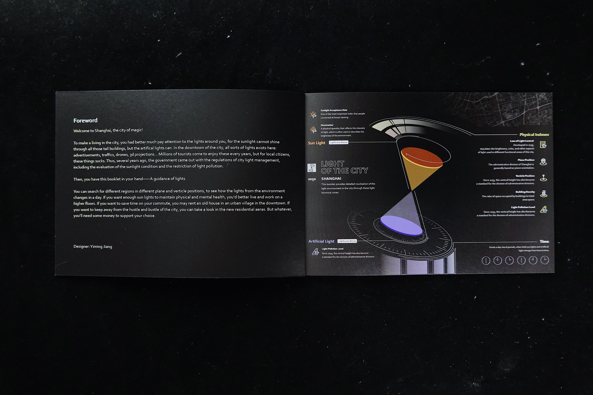

Urban Light Environments: Lumen Resident
INFORMATION DESIGN / PERSONAL PROJECT / 2021
This is a visualization project of the light environment in the city of Shanghai, which contains a series of multiple-layer maps and aguidance book as a reference.

Being one of the largest cities in the world, Shanghai attracts hundreds of millions of outsiders to live in the city. As they try to integrate into their resting and working environments, the light, as one of themost important aspect in evaluating living condition, shall have a clear and direct way to be presented to these people.

Based on my interviews, secondary researches and my own experience living in Shanghai, I design the visualization concepts to represent the information of various types of light sources, light pollution, and light obstructions. The booklet categorizes the information by administrative districts and time periods to facilitate people who lack knowledge of Shanghai to check information clearly and quickly.

In addition, based on the city development planning guidelines and photographs, I also artistically displayed Shanghai's overall light environment with illustrations and maps to reflect the city's colorful charm.



Reference
上海市城市总体规划[2017-2035年]图集, 上海市人民政府, 二零一八年一月发布, https://www.shanghai.gov.cn/newshanghai/xxgkfj/2035001.pdf
上海市地方标准城市环境[装饰]照明规范, 上海市质量技术监督局发布, https://sh.lhsr.cn/Plugins/ueditor1_2_5_1-utf8-net/net/upload/2015-02-15/b284700d-5ad7-4323-b551-8fabff26bc18.pdf